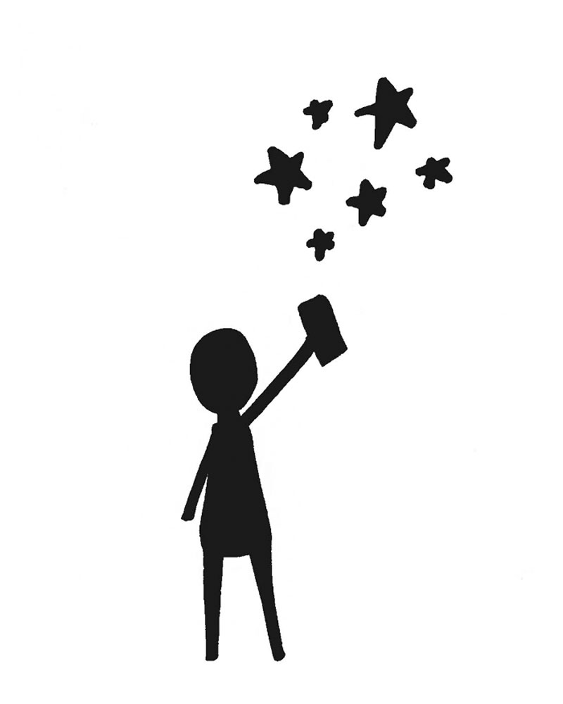
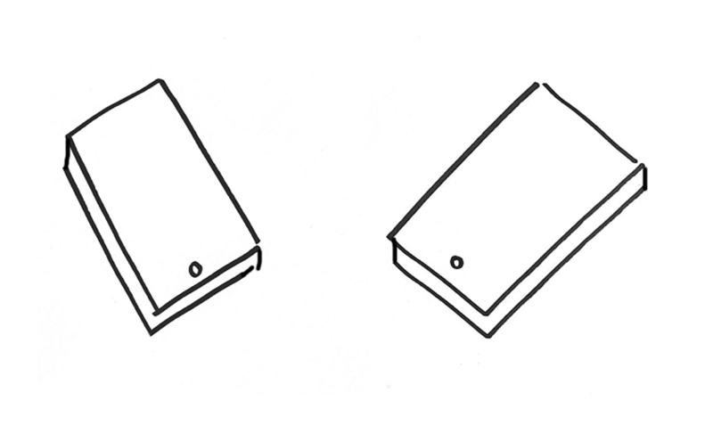

Many programs to raise awareness for global health and poverty have failed to fully take advantage of spontaneous digital tools.
The Lucky Star is the first serendipitous network powered by stars that allows people to send and receive luck, creating a sense that humanity is truly connected. Using the simple analog gesture of catching a star, people can also send lucky stars to those nearby who are in need of an emotional boost.
